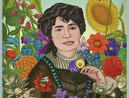
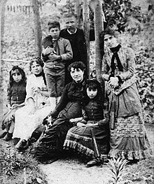

Poeta e noveslista española que escribeu tanto en galego como en castelán.Considerada entre as grandes poetas da literatura española do siglo XIX, representa xunto con Eduardo Pondal e Curros Enriquez unha das figuras emblemáticas do rexurdimento galego, no so pola sua aportación literaria en xeral e polo feito de que os seus cantares galegos sean entendidos como a primeira gran obra da literatura galega contemporánea.
María Rosalía Rita de Castro naceu en Santiago de Compostela o 23 de febrero de 1837 faleceu en Padrón o 15 de julio de 1885. Foi unha poetisa e novelista española que escribiu tanto en galego como en castelán. É considerada unha das grandes poetas da literatura española do siglo XIX, representa xunto con Eduardo Pondal e Curros Enríquez unha das figuras emblemáticas do Rexurdimento galego. Os seus cantares galegos son entendidos como a primeira obra da literatura galega contemporánea que a acabou convertindo na encarnación e símbolo do pobo galego.
Seu pai era o sacerdote José Martínez Viojjo, capellán da iglesia de Iria e de María Teresa de la Cruz Castro y Abadía. Cando Rosalia naceu sua nai tiña trinta e dous anos e ainda que levou o seu embarazo en secreto acabou admitindo a sua maternidade publicamente. Seu pai tiña trinta e nove anos cando naceu Rosalía. A sua condición sacerdotal impedía recoñecer a sua filla e delegou o seu coidado a suas irmans. Dona Teresa e Dona María Josefa, asumiron a sua tutela mentras viveu en Ortoño hasta que sua nai se fixo cargo de ela.
En 1856 trasladouse a Madrid, un ano despois publicou un folleto de poesías escrito en castelán que recibiu o titulo de "La flor". Conoceu a Manuel Murguia por un amigo que posibilitou que ambos entablasen unha relación, e o 10 de Outubro de 1858 casouse na Iglesia de San Idefonso. Aos sete meses de casarse a parexa tuvo sua primeira filla, Alejandra(1868) a cal lle seguiron Aura(1868), os mellizos Gala e Ovidio (1871), Amara (1873), Adriano Honorato (1875) o cal faleceu en novembro de 1876 por unha caída e Valentina (1877) a cal naceu morta, todos naceron en Galicia. O matrimonio cambiou varias veces de domicilio polo traballo de Murguía o cal fixo que o matrimonio se separara, tiñan grandes problemas economicos derivados da inestabilidade laboral do marido e da saude de Rosalía.
Desde 1871 Rosalía non saiu de Galicia, resideu nas Torres de Lestrove, en Dodro en Santiago de Compostela e Padrón, donde practicamente se instalou en 1875. Rosalia non gozaba de boa saude e pouco tempo antes de falecer decideu pasar unha temporada a veira do mar e foise a Santiago de Carril. Pouco tempo despois volveu a sua casa da Matanza en Padrón donde o cancér de útero que padecia se foi complicando progresivamente. Tras tres días de agonía faleceu o mediodia do 15 de Xulio de 1885, na sua casa da Matanza a consecuencia de un cancér de útero. O seu corpo recibeu sepultura no cemiterio de Adina,en Iria Flavia. Sin embargo, o seu cadaver foi exhumado en 1891 para ser levado solemnemente a Santiago de Compostela donde foi sepultado no mausoleo creado para a escritora polo escultor Jesús Landeira, situado na capilla da Visitación do Convento de Santo Domingo de Bonaval, no Panteón de Galegos Ilustres.
Cómo chove miudiño,
cómo miudiño chove;
cómo chove miudiño
pola banda de Laíño,
pola banda de Lestrove.
¡Cómo a triste branca nube
truba o sol que inquieto aluma;
cál a crube i o descrube,
pasa, torna, volve e sube,
enrisada branca pruma!
Xa, dempóis, lonxe espallada
polos aires fuxitivos,
desteñida, sombrisada,
nos espasos desatada,
cae brillando en raios vivos.
¡Bendita a Virxe da Barca,
bendita por sempre sea!
¡Miña Virxe milagrosa,
en quen tantos se recrean!
Todos van por visitala,
todos alí van por vela
na súa barca dourada,
na súa barca pequena,
donde están dous anxeliños,
dous anxeliños que reman.
sempre adoradores teña.
nunha embarcazón de pedra.
Alí, porque Dios o quixo,
Alí chegou milagrosa
No ceo, azul crarísimo;
no chan, verdor intenso;
no fondo da alma miña,
todo sombriso e negro.
¡Qué alegre romaría!
¡Qué risas e contentos!
I os meus ollos en tanto
de bágoas están cheos.
Cubertos de verdura,
brillan os campos frescos,
mentras que a fel amarga
rebosa no meu peito.